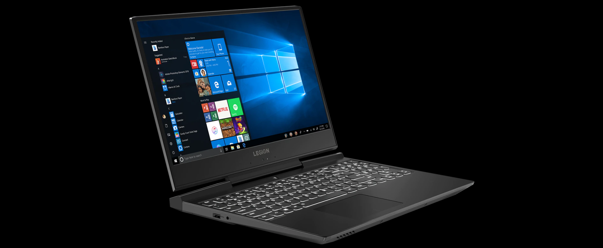

Игровой ноутбук Legion Y545 (15)
Особенности
Windows 10: великолепные возможности для игр
ПК Lenovo с Windows 10 и процессорами Intel® Core™ 9-го поколения легко справятся со всеми игровыми задачами: от запуска новейших игр в формате 4K до обмена скриншотами в формате HDR — и все это с потрясающей графикой Intel.1 Вы получите решающее преимущество в быстродействии, мощности, производительности и скорости отклика. Кроме того, у вас будет возможность играть в дороге на тонком и легком ноутбуке Legion, поддерживающем удивительно долгое время автономной работы.2
1 Под управлением Windows 10 требования игр к оборудованию ПК могут измениться. Игры и медиаконтент продаются отдельно. Функциональность 4K доступна при использовании игр, мониторов и видеокарт, поддерживающих это разрешение.
2 Время автономной работы в значительной степени зависит от типа устройства, параметров системы и условий эксплуатации.
Новые графические возможности
Видеокарта NVIDIA® GeForce RTX™ обеспечивает наилучшие впечатления от игры на ноутбуке. Элегантные и производительные игровые ноутбуки Lenovo Legion Y545 оснащены видеокартами на основе архитектуры NVIDIA® Turing™ и революционной технологической платформы RTX. Они поддерживают технологии трассировки лучей в реальном времени, искусственного интеллекта и программируемого шейдинга.
Новый тип игровых устройств
Старые громоздкие игровые ноутбуки ушли в прошлое, и теперь настало время подобрать устройство, достойное вас, — строгое внешне, но хищное по натуре. Ноутбук Lenovo Legion Y545 толщиной 24,7 мм и массой 2,3 кг был специально разработан, чтобы обеспечить идеальный баланс между невероятной производительностью в играх и реальной портативностью.
Оптимальное сочетание мощи и размера
Настоящие профессионалы своего дела работали не только над дизайном. Игровой ноутбук Lenovo Legion Y545 — результат многих тысяч часов работы инженеров, которым удалось создать мощный ноутбук, сочетающий память DDR4, твердотельный накопитель PCIe и многое другое в тонком корпусе. Наши инженеры объединили свой опыт в разработке аккумуляторов, размещении разъемов ввода/вывода, создании систем охлаждения и конструировании материнских плат, чтобы собрать в одном производительном игровом ноутбуке самое лучшее оборудование.
Игры без границ
Игровой ноутбук Lenovo Legion Y545 поставляется с 15-дюймовым дисплеем с узкими рамками и разрешением FHD. Благодаря частоте обновления до 144 Гц, яркости до 300 нит, матрице IPS и антибликовому покрытию ноутбук идеально подходит для полного погружения в любимую игру в любом месте и в любое время.
Перенеситесь в самую гущу событий
Мощный звук Dolby Atmos® слышится отовсюду, совсем как в реальном мире. Вы словно переноситесь в самую гущу событий. Эта технология — шаг вперед по сравнению с объемным звуком. Она дает вам конкурентное преимущество: звуковой радар Sound Radar, который отображается поверх игрового экрана, покажет, откуда доносятся те или иные звуки. Вы станете более бдительными, сможете вслушиваться в каждый шорох, чтобы полностью погрузиться в игру.*
*Технология Dolby Atmos доступна только при использовании наушников.
Время нанести удар
При интенсивных перестрелках от инструментов управления требуется самый быстрый отклик. Клавиатура игрового ноутбука Lenovo Legion Y545 обеспечивает лучшие в своем классе средства управления игрой, дающие преимущество перед любым противником. Эта полноразмерная клавиатура с белой подсветкой обеспечивает стопроцентную защиту от ложных срабатываний, время отклика менее 1 мс и ход клавиш 1,7 мм для полного контроля над системой. Группа клавиш WASD в ней выделена с помощью лазерной гравировки. Кроме того, на ноутбуке Lenovo Legion Y545 установлены драйверы Windows Precision, поддерживающие распознавание жестов, что упрощает управление устройством как при работе, так и в игре.
Охлаждение с помощью ColdFront
Перегрев — вечный враг игровой производительности —больше не будет проблемой благодаря системе охлаждения Legion Coldfront. Эта технология предоставляет все лучшие возможности, которые только может обеспечить двухканальная система терморегуляции. Тепло отводится отдельно от центрального процессора и видеокарты, чтобы снизить температуру всей системы. Специальные теплоотводы обеспечивают охлаждение клавиатуры, а 70 отдельных лопаток вентилятора в каждом канале позволяют минимизировать шум.
Lenovo Vantage
Повысьте свой уровень игры с помощью приложения Lenovo Vantage с поддержкой Legion Edge. Автоматическая настройка производительности, охлаждения и управления питанием позволит тратить меньше времени на отладку настроек и больше времени на игру.
Расширьте свое поле зрения
Пришло время расширить возможности наблюдения на боевом посту. Система Legion Triple Display Support System (показана на примере ноутбука Lenovo Legion Y540) использует разъемы HDMI 2.0, Mini DisplayPort и порт USB Type-C, чтобы вы могли подключить к ноутбуку до трех мониторов одновременно для максимального погружения в игру и управления ее ходом. Кроме того, разъемы ввода/вывода расположены в основном на задней панели. Это поможет уложить кабели так, чтобы чистота и порядок на боевом посту позволили максимально сосредоточиться на игре.
Универсальные средства подключения
Игровой ноутбук Lenovo Y545 оснащен удобным набором портов и разъемов. Чтобы подключить внешние устройства и дополнительное оборудование, воспользуйтесь портами USB Type-C и USB 3.0, а также разъемами MiniDP, HDMI и RJ45. Для зарядки ноутбука предусмотрен разъем адаптера питания, а для защиты — разъем для замка Kensington.
Технические характеристики
| Процессор | Процессор Intel® Core™ i7-9750H 9-го поколения Процессор Intel® Core™ i5-9300H 9-го поколения |
| Операционная система | Windows 10 Домашняя |
| Видеокарта |
видеокарта NVIDIA® GeForce RTX™ 2060 видеокарта NVIDIA® GeForce® GTX 1660 Ti видеокарта NVIDIA® GeForce® GTX 1650 |
| Дисплей |
15,6-дюймовый дисплей стандарта FHD (1920 x 1080) с матрицей IPS (частота обновления 144 Гц / покрытие цветового пространства NTSC 72 % / яркость 300 нит) |
| Память | до 16 ГБ памяти |
| Аккумулятор | 52,5 Вт·ч (с видеокартами NVIDIA® GeForce RTX™ 2060 или NVIDIA® GeForce® GTX 1660 Ti) 57 Вт·ч (с видеокартой NVIDIA® GeForce® GTX 1650) |
| Накопители | Твердотельный накопитель PCIe до 512 ГБ и опционально жесткий диск до 2 ТБ |
| Аудиосистема | Динамики Harman® с поддержкой технологии Dolby Atmos® for Gaming |
| Габариты (Ш × Г × В) | 361,1 x 266,7 x 24,7–26,6 мм |
| Вес | От 2,3 кг |
| Клавиатура | С белой подсветкой |
| Цвет | Стальной серый |
| Средства коммуникации | 802.11 AC 2x2 Wi-Fi + Bluetooth® 4.2 Сеть 1 Гбит/с |
| Порты и разъемы |
Порт USB Type-C 3 порта USB 3.1 Gen 1 Комбинированный разъем для микрофона и наушников Разъем Mini DisplayPort™ 1.4 Разъем HDMI™ 2.0 Разъем RJ45 Замок Kensington |
| Предустановленное ПО (в случае наличия предустановленной ОС) |
Lenovo Vantage (настройки, обновление драйверов) Microsoft Office (пробная версия) McAffee LiveSafe (пробная версия) |
© 2021 Lenovo. Все права защищены